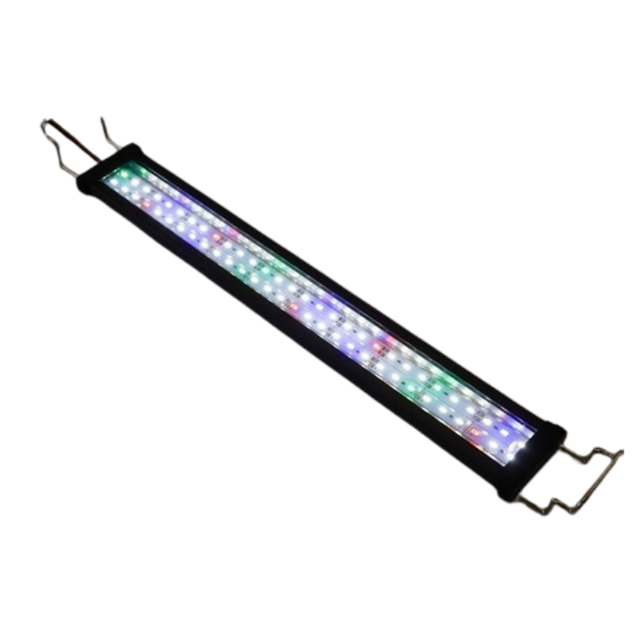
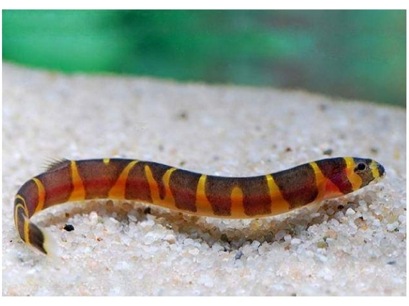

Ana sayfa
Ucuz Bütçe
Orta Bütçe
Pahalı Bütçe
Bu sayfamızda akvaryumların içinde bulunması gereken zorunlu veya zorunsuz eşyaları ve bilgileri inceleyeceğiz
Zorunlu
- Hava Motoru
- Aydınlatma
- Bakteri kültürü
- Akvaryum Filtresi
Opsiyonel
- Kum
- Bitki(4.maddeyi yapman lazım)
- Süs
- Vitamin
ZORUNLU
Hava Motoru
Hava motoru akvaryumun olmazsa olmazıdır.Balıkların oksijen kaynağını ve bakteri kültürünün sağlıklı yaşaması için takılması şarttır.
İki farklı türü var şimdi bunları inceleyeceğiz.
Daldırma Motoru
 Daha çok ucuz ve küçük akvaryumlarda kullanılır.Bakteri kültürü bakımından pek sağlıklı olmasada 35 40 litre bir akvaryuma uygundur.
Temizleme konusunda ise 3 4 ayda bir temizlerseniz uygundur,sakin balıklar için hızını azaltmanızı öneririz
Daha çok ucuz ve küçük akvaryumlarda kullanılır.Bakteri kültürü bakımından pek sağlıklı olmasada 35 40 litre bir akvaryuma uygundur.
Temizleme konusunda ise 3 4 ayda bir temizlerseniz uygundur,sakin balıklar için hızını azaltmanızı öneririz
Dıştan Akvaryum Motoru
 Daha çok büyük ve kalabalık akvaryumlarda kullanılır.Pahalı ve bakımı zordur,fakat bakteri kültürü bakımından en iyisidir.
Daha çok büyük ve kalabalık akvaryumlarda kullanılır.Pahalı ve bakımı zordur,fakat bakteri kültürü bakımından en iyisidir.
Aydınlatma

Önemsiz gözüksede akvaryumda balıkların vücudunun zaman faktörünü sağlıklı bir şekilde yürütmesi için zorunludur
Bitki akvaryumlarında bitkilerin güneş enerjisini ışıktan karşılaması için güneşi taklit eden ışıkları alıp akvaryumun derinliğine uygun ışık almanız daha mantıklı olur
Bakteri kültürü
Bakteri kültürü bir akvaryum için biyolojik olan en önemli etkendir,Akvaryumda balıkların yada diğer canlıların yaptığı dışkıların içindeki amonyağı parçalayarak yerler(eğer akvaryumunuzda bitki varsa onlarada besin sağlarlar)
akvaryum kültürünün oturması boş musluk sulu akvaryumlarda 4 5 ayı bulabilir, bu yüzden farklı akvaryumlardan belli bi miktar su aşılamak en mantıklısıdır,fakat su aşılayacağınız akvaryumda hastalık olmadığından emin olun
Filtre
Filtre akvaryumlarda bakteri kültürürünün oturduğu ve ürediği yerdir,2 farklı versiyonu vardır bi tanesi yukarıda gösterdiğimiz dıştan akvaryum motoru diğerinede şimdi değineceğim
İç Filtreli Akvaryum
 Burada görsel bulamadığım için kendi akvaryumumu çektim
Burada görsel bulamadığım için kendi akvaryumumu çektim 😅
OPSİYONEL
Kum
Akvaryum kumları hakkında seçeneğiniz çok bu yüzden hepsini kısa ve net bi şekilde açıklamaya çalıştım
1. Silis Kum (Quartz Kum)
Nötr pH’lı, en yaygın kullanılan kum türüdür.
Uygun fiyatlı ve temizdir.
Genel tatlı su akvaryumları için idealdir.
2. Dere Kumu
Doğal görünümlü, kahverengi-bej tonlarında kumdur.
Balıkların doğal ortamına benzer bir taban oluşturur.
3. Bitki Kumu (Besinli Taban)
Bitkilerin köklerinden besin almasını sağlar.
Üzerine genellikle 2–3 cm silis kum serilir.
4. Bazalt / Siyah Kuvars Kum
Nötr pH, estetik akvaryumlar için uygundur.
5. Lav Kumu (Volkanik Kum)
Gözenekli yapısı sayesinde bakteriler için yüzey alanı oluşturur.
Filtrasyon sistemini destekler.
6. Mercan Kumu
pH’ı yükseltir, suyu alkali hale getirir.
Deniz ve Afrika ciklet akvaryumlarında kullanılır.
DİKKAT
Akvaryum kumu seçerken alıcağınız balığın türü çok önemlidir, mesela kuhli;

gibi balıklar derinde yüzdükleri için cam bazlı bazalt gibi kumlar tenlerine zarar verir ve onları ölüme kadar götürür
Ben şahsen ince kumları kullanıyorum çünkü her balık için uygun vede balıkların zaman içinde orada yaşadıkça taşların yada başka yerlerin altına mağara yapmasını kolaylaştırır
Bitkiler ve Vitamin
Ben şahsen bu konuda fazla bilgili değilim,o yüzden bildiklerimi anlatacağım
Bitkilerin hayatta kalabilmesi için 2 ana besine ihtiyaçları var Güneş Işığı,Besin
Güneş ışığını lambayla halledebilirsiniz,alacağınız alıcıya akvaryumda bitki yetiştireceğinizi söylerseniz size yardımcı olur
Konu besine gelince işler karışıyor,bitkilerin doğal ortamını taklit etmek balıklara göre kat ve kat zor,bu yüzden besleyici kum ve vitamin kullanılıyor,
Konu hakkında fazla bilgim olmadığı için sizi güvendiğim bi kaynağa yönlendiriyorum Bitkiler hakkında giriş eğitimi
Süsler
Süsler hakkında genellikle istediğini alabilirsiniz,fakat alıcağınız süsün uzun zamanda bir toksik salınım yapmayacağından emin olun mümkünse balıkların saklanabileceği yada balık dışında salyangoz,karides besleyecekseniz üstü yosun tutabilecek bi süs akvaryuma çok iyi bir hava katar
Başa dönmek için